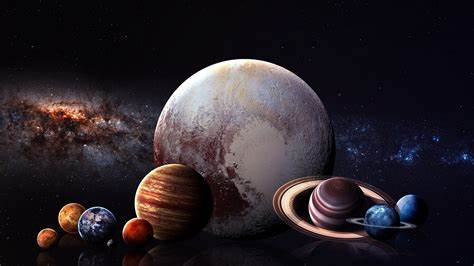

El sistema solar: qué es, cómo se formó y datos principales
El Universo es un lugar enorme. Sus dimensiones son tan colosalmente grandes que incluso resultan difíciles de imaginar para los astrónomos más experimentados. Se trata de un lugar plagado de estrellas, nebulosas, galaxias, agujeros negros, planetas, lunas, asteroides y otros muchos tipos de objetos astronómicos. Sin embargo, en medio de toda esa inmensidad cósmica, existe un lugar, un pequeño rincón del universo que podemos considerar nuestro hogar; la cuna en la que todo comenzó para nuestra especie: ese lugar recibe el nombre de sistema solar.
¿Qué es el sistema solar?
¿Cuáles son las partes del sistema solar?
¿Dónde se encuentra el sistema solar?
¿Cuáles son los límites del sistema solar?
¿Cuáles son los límites del sistema solar?
PLANETAS
CONTENIDO DE LA PAGINA

¿Qué es el sistema solar?
El sistema solar es un sistema planetario. Un sistema planetario está constituido
por una estrella (o en ocasiones un conjunto de estrellas) y los cuerpos celestes
que giran a su alrededor, es decir, que se encuentran bajo la influencia de su campo
gravitatorio, ya se trate de planetas con sus respectivas lunas, planetas menores,
asteroides, cometas, o polvo estelar.
En el caso del sistema solar, la estrella que da forma a todo el sistema planetario
es el Sol, el cual ocupa el centro de un enorme disco de material que se extiende por
más de 30.000 millones de kilómetros, en el que como decíamos, se encuentran sus
ocho planetas y demás objetos celestes
¿Cuáles son las partes del sistema solar?
La mayor parte del sistema solar, al igual que sucede con el resto de sistemas
planetarios, es espacio vacío. Sin embargo, alrededor de todo ese espacio existen
multitud de objetos influenciados por la gravedad del Sol, los cuales componen el
sistema solar.
Como no podía ser de otra manera, el Sol es la parte más importante del sistema solar.
Se encuentra en su centro, y todos los objetos del sistema solar están influenciados
por su gravedad. Se trata de una estrella de tipo G, también conocidas como enanas
amarillas, que se encuentra aproximadamente en la mitad de su vida, a día de hoy de
unos 4.600 millones de años. El sol está formado por tres cuartas partes de hidrógeno
y una de helio, gira sobre su propio eje, alrededor del cual tarda 25 días en dar
una vuelta, y por si mismo representa aproximadamente del 99,86 % de la masa total
del sistema solar.
Por su tamaño, los siguientes objetos más importantes del sistema solar son los
planetas, los cuales podemos dividir en dos clases diferentes. Así, ocupando las
orbitas internas del sistema solar se encuentran Mercurio, Venus, La Tierra y Marte.
Se trata de los planetas de menor tamaño, por su posición en el sistema solar
conocidos como planetas interiores y por su naturaleza sólida de roca y metal también
denominados planetas rocosos. Por contrapartida, en las órbitas más externas del
sistema solar encontraremos los planetas exteriores, mucho más grandes y compuestos
por gas, motivo por el que son denominados como gigantes gaseosos y gigantes de hielo.
Así, en orden a su distancia del Sol encontramos a Júpiter, Saturno, Urano y Neptuno.
A parte de los planetas, también se conocen en el sistema solar 5 de los denominados
planetas enanos. Como su nombre indica, se trata de objetos de mucho menor tamaño
caracterizados por poseer la gravedad suficiente como para haber adquirido una forma
esférica, sin embargo no la suficiente como para haber limpiado la vecindad de sus
órbita de otros objetos, lo que les diferencia de los planetas. Estos son Ceres,
ubicado en el cinturón de asteroides, entre Marte y Júpiter, y Plutón, Haumea,
Makemake y Eris, también denominados como plutoides y localizados en el llamado
cinturón de Kuiper.
El cinturón de asteroides es una región del sistema solar situada entre las órbitas
de Marte y Júpiter que albera una gran cantidad de pequeños objetos formados por
roca y hielo, en su mayoría asteroides, los cuales se cree que son los restos de un
planeta que nunca llegó a formarse debido a la influencia gravitatoria de Júpiter.
Más de la mitad la masa total del cinturón está contenida en 5 objetos: Ceres, el
planeta enano; y los asteroides Palas, Vesta Higia y Juno.
El cinturón de Kuiper es una región del sistema solar situada más allá de la órbita
de Neptuno. Es similar al cinturón de asteroides, pero es mucho más grande: 20 veces
más ancho y hasta 200 veces más masivo, y al igual que este, se compone principalmente
de pequeños objetos residuales de la formación del sistema solar, en este caso
compuestos principalmente por agua, metano y amoniaco en forma de hielo.
La nube de Oort es una nube esférica de objetos que se encuentran más allá de la
órbita de Neptuno, hasta a un año luz de distancia del Sol. Según las estimaciones,
esta nube podría albergar entre 1.000 y 100.000 millones de objetos formados por hielo,
metano y amoníaco que podrían sumar una masa de 5 veces la del planeta Tierra
¿Dónde se encuentra el sistema solar?
El sistema solar forma parte de nuestra galaxia, la Vía Láctea, una galaxia del tipo
espiral barrada que tiene un diámetro aproximadamente 105.000 años luz entre sus
extremos más distantes. En su estructura, la Vía Láctea, está conformada por dos
brazos espirales principales, llamados del Escudo-Centauro y Perseo, y dos brazos
secundarios, los de Norma y Sagitario. Nuestro Sistema Solar se encuentra en el brazo
de Orión o Local, el cual forma parte del brazo espiral de Sagitario. El Sol, es
decir, la estrella alrededor de la que gira todo el sistema solar, a su vez se mueve
a 210 kilómetros por segundo dentro de la Vía Láctea y tarda 225 millones de años
en completar una vuelta alrededor del centro de la galaxia. Es lo que los
científicos conocen como un año galáctico.
Respecto a nuestros vecinos en la galaxia, para encontrar otro sistema planetario
hemos de viajar al menos a 4,4 años luz hasta llegar a Alfa Centauri, un sistema de
3 estrellas en el que por el momento se han encontrado 2 planetas de aproximadamente
el tamaño de la Tierra.
¿Cuáles son los límites del sistema solar?
¿Dónde empieza y acaba el sistema solar? Sin duda se trata de una pregunta de no fácil
respuesta. El 4 de noviembre del año 2019, la NASA anunció que la sonda espacial
Voyager 2, había abandonado el sistema solar tras 40 años de su partida desde la
Tierra. Su sonda gemela, la Voyager 1, ya lo había conseguido 7 años antes,
en marzo de 2012 ¿Pero a qué se refería la NASA?
Según la agencia espacial americana, las sondas, ambas los objetos creados por el ser
humano que más se han alejado de la Tierra jamás, habían salido de la heliosfera,
es decir, la región espacial que se encuentra bajo la influencia del viento solar
y su campo magnético, y atravesado la heliopausa, una línea imaginaria que
constituye el límite de la heliosfera y en la que el viento solar se une al medio
interestelar e interactúa con el viento estelar procedente de otras estrellas.
¿Cuáles son los límites del sistema solar?
Los científicos tienen múltiples teorías que tratan de explican cómo se formó el
sistema solar, sin embargo, una de las más aceptadas propone que antes de existiera
el sistema solar, su lugar lo ocupaba una enorme nube de gas molecular que se
acumulaba cada vez en mayores cantidades y densidad debido a las bajas temperaturas
que imperan en la mayor parte del Universo.
La teoría parece indicar que llegado cierto momento, bien debido al colapso
gravitatorio de este gas interestelar (acreción por gravedad), o bien motivado
por un aporte de energía procedente de la explosión de una estrella o supernova
cercana, tuvo lugar el nacimiento de una protoestrella.
Esta protoestrella, es decir, nuestro Sol en estado gestación, continuó atrayendo
gas y materia formando un disco de material alrededor de la misma y a partir del
cual se formarían los planetas. Posteriormente, la protoestrella alcanzaría una
densidad y presión suficiente como para que en su interior se iniciasen los procesos
de fusión nuclear que caracterizan a estos astros, convirtiendo en su seno el
hidrógeno en helio, y dando lugar a su vez al origen del viento interestelar que
limpió de escombros las órbitas de los planetas actuales.
Durante todo este proceso y a partir de todo el material que no se incorporó al Sol,
también se formaron los planetas, lunas o asteroides. Como decíamos, este material
formó un disco masivo alrededor del Sol primitivo. En el interior del disco quedaron
los materiales más pesados, los cuales se unieron a causa de la misma gravedad dando
origen a los planetas rocosos. Tras formarse el Sol, el viento solar también
arrastró los materiales más ligeros al exterior del sistema solar, donde se produjo
la formación de los gigantes gaseosos.
PLANETAS
1.MERCURIO |
2.VENUS |
DATOS |
3.TIERRA |
4.MARTE |
5.JUPITER |
6.SATURNO |
??? |
7.URANO |
8.NEPTUNO |